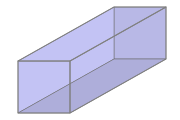

In a setting where a situation is described for which optimal parameters are sought, how do we develop a function that models the situation and use calculus to find the desired maximum or minimum?
Near the conclusion of Section 3.3, we considered two optimization problems where determining the function to be optimized was part of the problem. In Example 3.3.4, we sought to use a single piece of wire to build an equilateral triangle and square in order to maximize the total combined area enclosed. In the subsequent Activity 3.3.4, we investigated how the volume of a box constructed from a piece of cardboard by removing squares from each corner and folding up the sides depends on the size of the squares removed.
In neither of these problems was a function to optimize explicitly provided. Rather, we first tried to understand the problem by drawing a figure and introducing variables, and then sought to develop a formula for a function that modeled the quantity to be optimized. Once the function was established, we then considered what domain was appropriate. At that point, we were finally ready to apply the ideas of calculus to determine the absolute minimum or maximum.
Throughout what follows in the current section, the primary emphasis is on the reader solving problems. Initially, some substantial guidance is provided, with the problems progressing to require greater independence as we move along.
Preview Activity3.4.1.
According to U.S. postal regulations, the girth plus the length of a parcel sent by mail may not exceed 108 inches, where by “girth” we mean the perimeter of the smallest end. What is the largest possible volume of a rectangular parcel with a square end that can be sent by mail? What are the dimensions of the package of largest volume?
Let \(x\) represent the length of one side of the square end and \(y\) the length of the longer side. Label these quantities appropriately on the image shown in Figure 3.4.1.

Figure3.4.1.A rectangular parcel with a square end.
What is the quantity to be optimized in this problem? Find a formula for this quantity in terms of \(x\) and \(y\text{.}\)
The problem statement tells us that the parcel's girth plus length may not exceed 108 inches. In order to maximize volume, we assume that we will actually need the girth plus length to equal 108 inches. What equation does this produce involving \(x\) and \(y\text{?}\)
Solve the equation you found in (c) for one of \(x\) or \(y\) (whichever is easier).
Now use your work in (b) and (d) to determine a formula for the volume of the parcel so that this formula is a function of a single variable.
Over what domain should we consider this function? Note that both \(x\) and \(y\) must be positive; how does the constraint that girth plus length is 108 inches produce intervals of possible values for \(x\) and \(y\text{?}\)
Find the absolute maximum of the volume of the parcel on the domain you established in (f) and hence also determine the dimensions of the box of greatest volume. Justify that you've found the maximum using calculus.
Subsection3.4.1More applied optimization problems
Many of the steps in Preview Activity 3.4.1 are ones that we will execute in any applied optimization problem. We briefly summarize those here to provide an overview of our approach in subsequent questions.
Note3.4.2.
Draw a picture and introduce variables. It is essential to first understand what quantities are allowed to vary in the problem and then to represent those values with variables. Constructing a figure with the variables labeled is almost always an essential first step. Sometimes drawing several diagrams can be especially helpful to get a sense of the situation. A nice example of this can be seen in this applet 1 , where the choice of where to bend a piece of wire into the shape of a rectangle determines both the rectangle's shape and area.
Identify the quantity to be optimized as well as any key relationships among the variable quantities. Essentially this step involves writing equations that involve the variables that have been introduced: one to represent the quantity whose minimum or maximum is sought, and possibly others that show how multiple variables in the problem may be interrelated.
Determine a function of a single variable that models the quantity to be optimized; this may involve using other relationships among variables to eliminate one or more variables in the function formula. For example, in Preview Activity 3.4.1, we initially found that \(V = x^2 y\text{,}\) but then the additional relationship that \(4x + y = 108\) (girth plus length equals 108 inches) allows us to relate \(x\) and \(y\) and thus observe equivalently that \(y = 108-4x\text{.}\) Substituting for \(y\) in the volume equation yields \(V(x) = x^2(108-4x)\text{,}\) and thus we have written the volume as a function of the single variable \(x\text{.}\)
Decide the domain on which to consider the function being optimized. Often the physical constraints of the problem will limit the possible values that the independent variable can take on. Thinking back to the diagram describing the overall situation and any relationships among variables in the problem often helps identify the smallest and largest values of the input variable.
Use calculus to identify the absolute maximum and/or minimum of the quantity being optimized. This always involves finding the critical numbers of the function first. Then, depending on the domain, we either construct a first derivative sign chart (for an open or unbounded interval) or evaluate the function at the endpoints and critical numbers (for a closed, bounded interval), using ideas we've studied so far in Chapter 3.
Finally, we make certain we have answered the question: does the question seek the absolute maximum of a quantity, or the values of the variables that produce the maximum? That is, finding the absolute maximum volume of a parcel is different from finding the dimensions of the parcel that produce the maximum.
Activity3.4.2.
A soup can in the shape of a right circular cylinder is to be made from two materials. The material for the side of the can costs $0.015 per square inch and the material for the lids costs $\(0.027\) per square inch. Suppose that we desire to construct a can that has a volume of 16 cubic inches. What dimensions minimize the cost of the can?
Draw a picture of the can and label its dimensions with appropriate variables.
Use your variables to determine expressions for the volume, surface area, and cost of the can.
Determine the total cost function as a function of a single variable. What is the domain on which you should consider this function?
Find the absolute minimum cost and the dimensions that produce this value.
Note that both the radius and the height of the can are variable.
Remember that volume is the area of the base times the height, while surface are can be thought of in terms of the area of the two lids, plus the area of the “side” of the can.
Use the fact that \(V = 16\) to write one of the variables in terms of the other to get the cost as a function of a single variable.
Differentiate the total cost function and find its critical number(s) first.
Familiarity with common geometric formulas is particularly helpful in problems such as the one in Activity 3.4.2. Sometimes those involve perimeter, area, volume, or surface area. At other times, the constraints of a problem introduce right triangles (where the Pythagorean Theorem applies) or other functions whose formulas provide relationships among the variables.
Activity3.4.3.
A hiker starting at a point \(P\) on a straight road walks east towards point \(Q\text{,}\) which is on the road and 3 kilometers from point \(P\text{.}\)
Two kilometers due north of point \(Q\) is a cabin. The hiker will walk down the road for a while, at a pace of 8 kilometers per hour. At some point \(Z\) between \(P\) and \(Q\text{,}\) the hiker leaves the road and makes a straight line towards the cabin through the woods, hiking at a pace of 3 kph, as pictured in Figure 3.4.3. In order to minimize the time to go from \(P\) to \(Z\) to the cabin, where should the hiker turn into the forest?
Figure3.4.3.A hiker walks from \(P\) to \(Z\) to the cabin, as pictured.
Let \(x\) be the distance from \(Z\) to \(Q\text{.}\) What is then the distance from \(P\) to \(Z\) in terms of \(x\text{?}\) How about the distance from \(Z\) to the cabin? How does time depend on distance and rate?
In more geometric problems, we often use curves or functions to provide natural constraints. For instance, we could investigate which isosceles triangle that circumscribes a unit circle has the smallest area, which you can explore for yourself in this applet 2 . Or similarly, for a region bounded by a parabola, we might seek the rectangle of largest area that fits beneath the curve, as shown in this applet 3 . The next activity is similar to the latter problem.
Activity3.4.4.
Consider the region in the \(x\)-\(y\) plane that is bounded by the \(x\)-axis and the function \(f(x) = 25-x^2\text{.}\) Construct a rectangle whose base lies on the \(x\)-axis and is centered at the origin, and whose sides extend vertically until they intersect the curve \(y = 25-x^2\text{.}\) Which such rectangle has the maximum possible area? Which such rectangle has the greatest perimeter? Which has the greatest combined perimeter and area? (Challenge: answer the same questions in terms of positive parameters \(a\) and \(b\) for the function \(f(x) = b-ax^2\text{.}\))
Let \(x\) represent half the width of the rectangle's base. How does the rectangle's height depend on \(x\text{?}\)
Activity3.4.5.
A trough is being constructed by bending a \(4 \times 24\) (measured in feet) rectangular piece of sheet metal.
Two symmetric folds 2 feet apart will be made parallel to the longest side of the rectangle so that the trough has cross-sections in the shape of a trapezoid, as pictured in Figure 3.4.4. At what angle should the folds be made to produce the trough of maximum volume?
Figure3.4.4.A cross-section of the trough formed by folding to an angle of \(\theta\text{.}\)
Drop altitudes from the top of the trough to the base of length 2. In the two triangles that are formed, what are the lengths of the legs in terms of \(\theta\text{?}\)
Subsection3.4.2Summary
While there is no single algorithm that works in every situation where optimization is used, in most of the problems we consider, the following steps are helpful: draw a picture and introduce variables; identify the quantity to be optimized and find relationships among the variables; determine a function of a single variable that models the quantity to be optimized; decide the domain on which to consider the function being optimized; use calculus to identify the absolute maximum and/or minimum of the quantity being optimized.
Exercises3.4.3Exercises
1.Maximizing the volume of a box.
An open box is to be made out of a 10-inch by 18-inch piece of cardboard by cutting out squares of equal size from the four corners and bending up the sides. Find the dimensions of the resulting box that has the largest volume.
Dimensions of the bottom of the box: x
Height of the box:
2.Minimizing the cost of a container.
A rectangular storage container with an open top is to have a volume of 26 cubic meters. The length of its base is twice the width. Material for the base costs 11 dollars per square meter. Material for the sides costs 9 dollars per square meter. Find the cost of materials for the cheapest such container.
Total cost = (Round to the nearest penny and include monetary units. For example, if your answer is 1.095, enter $1.10 including the dollar sign and second decimal place.)
3.Maximizing area contained by a fence.
An ostrich farmer wants to enclose a rectangular area and then divide it into six pens with fencing parallel to one side of the rectangle (see the figure below). There are 620 feet of fencing available to complete the job. What is the largest possible total area of the six pens?
The top and bottom margins of a poster are 8 cm and the side margins are each 6 cm. If the area of printed material on the poster is fixed at 388 square centimeters, find the dimensions of the poster with the smallest area.
A rectangle is inscribed with its base on the \(x\)-axis and its upper corners on the parabola \(y= 1-x^2\text{.}\) What are the dimensions of such a rectangle with the greatest possible area?
Width =
Height =
6.
A rectangular box with a square bottom and closed top is to be made from two materials. The material for the side costs $1.50 per square foot and the material for the top and bottom costs $3.00 per square foot. If you are willing to spend $15 on the box, what is the largest volume it can contain? Justify your answer completely using calculus.
7.
A farmer wants to start raising cows, horses, goats, and sheep, and desires to have a rectangular pasture for the animals to graze in. However, no two different kinds of animals can graze together. In order to minimize the amount of fencing she will need, she has decided to enclose a large rectangular area and then divide it into four equally sized pens by adding three segments of fence inside the large rectangle that are parallel to two existing sides. She has decided to purchase 7500 ft of fencing. What is the maximum possible area that each of the four pens will enclose?
8.
Two vertical poles of heights 60 ft and 80 ft stand on level ground, with their bases 100 ft apart. A cable that is stretched from the top of one pole to some point on the ground between the poles, and then to the top of the other pole. What is the minimum possible length of cable required? Justify your answer completely using calculus.
9.
A company is designing propane tanks that are cylindrical with hemispherical ends. Assume that the company wants tanks that will hold 1000 cubic feet of gas, and that the ends are more expensive to make, costing $5 per square foot, while the cylindrical barrel between the ends costs $2 per square foot. Use calculus to determine the minimum cost to construct such a tank.